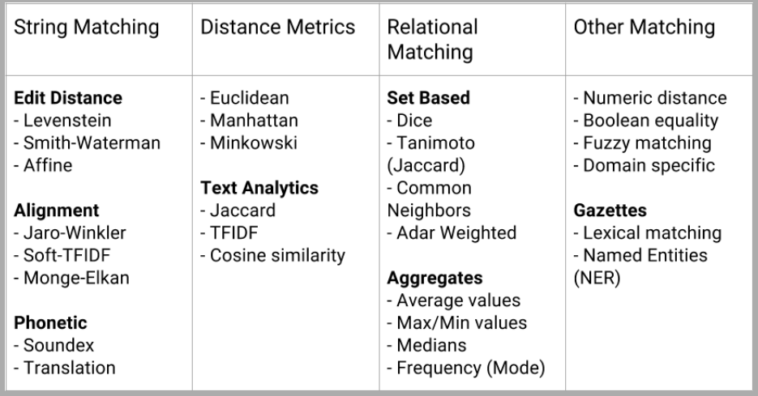

# Note: Check PunktSentenceTokenizer for European languages by NLTK.
from nltk import sent_tokenize
sents = []
for sentence in sent_tokenize(paragraph):
sents.append(sentence)
# do we want to remove punctuation from tokens, and if so, should we make punctuation marks tokens themselves? Should we preserve hyphenated words as compound elements or break them apart? Should we approach contractions as one token or two, and if they are two tokens, where should they be split?
from nltk import wordpunct_tokenize
tokens = []
for token in wordpunct_tokenize(sentence):
tokens.append(token)
from tensorflow.keras.preprocessing.text import Tokenizer
samles = ['The cat sat on the mat.', 'The dog ate my homework.']
tokenizer = Tokenizer(num_words=1000)
tokenizer.fit_on_texts(samples)
sequences = tokenizer.texts_to_sequences(samples)
one_hot_results = tokenizer.texts_to_matrix(samples, mode='binary')
word_index = tokenizer.word_index
print(f"Found {len(word_index)} unique tokens.")
from nltk.tokenize import TreebankWordTokenizer
sentence = """Monticello wasn't designated as UNESCO world Heritage Site until 1987."""
tokenizer = TreebankWordTokenizer()
tokenizer.tokenize(sentence)
#### RESULT ########
['Monticello',
'was',
"n't",
'designated',
'as',
'UNESCO',
'World',
'Heritage',
'Site',
'until',
'1987',
'.']
# The NLTK library includues a tokenizer that was built to deal with short, informal, emtion-laced texts from social networks where grammar and spelling conventions vary widely.
from nltk.tokenize.casual import casual_tokenize
message = """RT @TJMonticello Best day everrrrrrrr at Monticello. Awesommmmmmeeeeeee day:*)"""
casual_tokenize(message)
#### RESULT ####
['RT',
'@TJMonticello',
'Best',
'day',
'everrrrrrrr',
'at',
'Monticello',
'.',
'Awesommmmmmeeeeeee',
'day',
':*)']
casual_tokenize(message, reduce_len=True, strip_handles=True)
###### Result ########
['RT',
'Best',
'day',
'everrr',
'at',
'Monticello',
'.',
'Awesommmeee',
'day',
':*)']
# First find the individual tokens using the previous methods.
sentence = """Thomas Jefferson began building Monticello at the age of 26."""
pattern = re.compile(r"([-\s.,;!?])+")
tokens = pattern.split(sentence)
tokens = [x for x in tokens if x and x not in '- \t\n.,;!?']
# 2. Create the n-gram tokenizer.
from nltk.util import ngrams
two_grams = list(ngrams(tokens, 2))
#### RESULT ######
[('Thomas', 'Jefferson'),
('Jefferson', 'began'),
('began', 'building'),
('building', 'Monticello'),
('Monticello', 'at'),
('at', 'the'),
('the', 'age'),
('age', 'of'),
('of', '26')]
# Add them together in a string instead of tuple
two_grams = [" ".join(x) for x in two_grams]
text = ’That U.S.A. poster-print costs $12.40...’
pattern = r’’’(?x)
# set flag to allow verbose regexps
([A-Z]\.)+
# abbreviations, e.g. U.S.A.
| \w+(-\w+)*
# words with optional internal hyphens
| \$?\d+(\.\d+)?%? # currency and percentages, e.g. $12.40, 82%
| \.\.\.
# ellipsis
| [][.,;"’?():-_‘] # these are separate tokens; includes ], [
’’’
nltk.regexp_tokenize(text, pattern)
# [’That’, ’U.S.A.’, ’poster-print’, ’costs’, ’$12.40’, ’...’]
from nltk import pos_tag
tags = []
for paragraph in paragraphs:
for sentence in sent_tokenize(paragraph):
tags.append(pos_tag(wordpunct_tokenize(sentence)))
# import spacy
# !python -m spacy download en_core_web_sm
# en_model = spacy.load('en_core_web_sm')
sentence = ("In 1541 Desoto wrote in his journal that the Pascagoula people ranged as far north as the confluence of the Leaf and Chickasawhay rivers at 30.4, 88.5")
parsed_sent = en_model(sentence)
# Print entities.
print(parsed_sent.ents)
# Print tokens.
' '.join(['{}_{}'.format(tok, tok.tag_) for tok in parsed_sent])
# Show the TAG in dataframe.
from collections import OrderedDict
def token_dict(token):
return OrderedDict(ORTH=token.orth_, LEMMA=token.lemma_,
POS=token.pos_, TAG=token.tag_,
DEP=token.dep_)
def doc_dataframe(doc):
return pd.DataFrame([token_dict(tok) for tok in doc])
doc_dataframe(en_model("In 1541 Desoto met the Pascagoula."))
# Helps to monitor the changes into your corpus
import nltk, time
def describe():
started = time.time()
# Structures to perform counting.
counts = nltk.FreqDist()
tokens = nltk.FreqDist()
# Perform single pass over paragraphs, tokenize and count.
for para in paragraphs:
counts["para"] += 1
for sent in para:
counts["sents"] += 1
for word, tag in sent:
counts["words"] +=1
tokens[word] += 1
# Count the number of files and categories in the corpus.
n_fileids = ...
n_topics = ...
# Return data structure with information
return {
'files': n_fileids,
'topics': n_topics,
'paras': counts["para"],
'sents': counts["sents"],
'words': counts["words"],
'vocab': len(tokens),
'lexdiv': float(counts["words"]) / float(len(tokens)),
'ppdoc': float(counts["paras"]) / float(n_fileids),
'sppar': float(counts["sents"]) / float(counts["paras"]),
'secs': time.time() - started
}

# Extracting GPS coordinates
import re
lat = r'([-]?[0-9]?[0-9][.][0-9]{2,10})'
lon = r'([-]?1?[0-9]?[0-9][.][0-9]{2,10})'
sep = r'[,/ ]{1,3}'
re_gps = re.compile(lat+sep+lon)
print(re_gps.findall("http://...maps/@34.0551066,-118.2496763..."))
print( re_gps.findall("https://www.openstreetmap.org/#map=10/5.9666/116.0566"))
print(re_gps.findall("Zig Zag Cafe is at 45.344, -121.9431 on my GPS."))
# Regular Expression for US dates.
us = r'((([01]?\d)[-/]([0123]?\d))([-/]([0123]\d)\d\d)?)'
mdy = re.findall(us, "Santa came 12/25/2017. An elf appeared 12/12.")
print(mdy)
dates = [{"mdy": x[0], "md": x[1], "m": int(x[2]), 'd': int(x[3]),
"y": int(x[4].lstrip('/') or 0), 'c': int(x[5] or 0)} for x in mdy]
print(dates)
# If you have a second date without a year, append the mentioned year to that date.
for i, d in enumerate(dates):
for k, v in d.items():
if not v:
d[k] = dates[max(i-1, 0)][k]
print(dates)
# Transform the dates into date type.
from datetime import date
datetimes = [date(d['y'], d['m'], d['d']) for d in dates]
print(datetimes)
# Extracting European dates.
eu = r'((([0123]?\d)[-/]([01]?\d))([-/]([0123]\d)?\d\d)?)'
dmy = re.findall(eu, "Alan Mathison Turing OBE FRS (23/6/1912-7/6/1954) was an English computer scientist.")
print(dmy)
mon_words = 'January February March April May June July August September October November December'
mon = (r'\b(' + '|'.join('{}|{}|{}|{}|{:02d}'.format(
m, m[:4], m[:3], i + 1, i + 1) for i, m in enumerate(mon_words.split())) + r')\b')
re.findall(mon, 'January has 31 days, February the 2nd month of 12, has 28, except in a Leap Year.')
s = "very long corpus..."
words = s.split()
vocab = dict(enumerate(set(words)))
# {0: 'corpus...', 1: 'very', 2: 'long'}
tr -sc ’A-Za-z’ ’\n’ < sh.txt | tr A-Z a-z | sort | uniq -c | sort -n -r